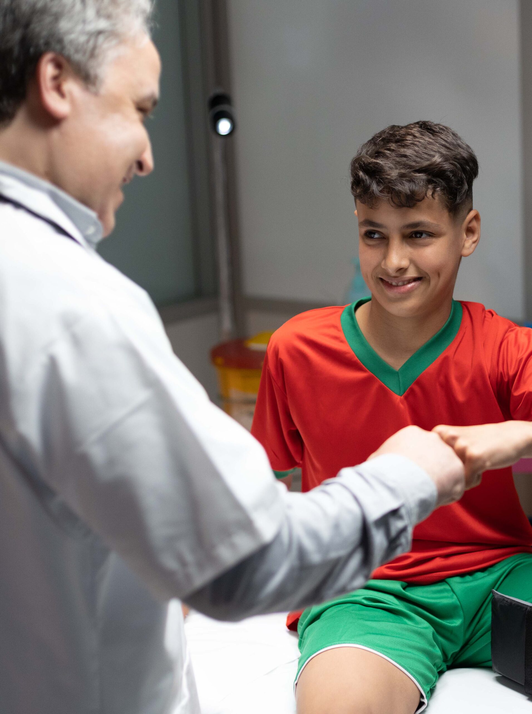

Our historyOur journey began in 2011 with the founding of the Jerrada Clinic in Casablanca. This was the genesis of an initiative dedicated to enhancing the health of Moroccan citizens, grounded in a bold vision: to democratize quality healthcare for all Moroccans. Each subsequent facility has been a step closer to the communities we serve, strengthening a healthcare delivery that's intimately patient-focused. Since 2021, we've been proud to contribute to the transformation of Morocco's healthcare system and in the expansion of Mandatory Health Insurance. Our proactive approach and growth ambitions help foster a more inclusive and equitable health policy, and complements the nation's transformative efforts. The strategic diversification of our equity base, coupled with our stock market entry in 2022 marked a transformative milestone, broadening our horizons and bolstering our ability to uphold our mission. Today, AKDITAL stands as a major player in Morocco’s private healthcare sector, continuously expanding its reach to bring care closer to patients across all regions of the country, and reaffirming our commitment to be present wherever there is a need. We are more than healthcare providers; we are lifelong health partners for every Moroccan, dedicated to a future where medical care is an accessible right, not a privilege. Our story is defined by relentless perseverance, innovative spirit, and an unshakeable dedication to our nation and its citizens.
Specialized centers (e.g., in Kenitra, Meknes, and Benguerir) offer a full "arsenal" of therapies including chemotherapy, radiotherapy, and psychological support.
Extensive facilities for interventional cardiology, cardiac surgery, and neurosurgery, supported by modern catheterization labs.
High-capacity units equipped with sophisticated monitoring technology for rapid clinical decision-making.
Specialized delivery rooms and neonatal intensive care units designed for complex obstetric scenarios.
Akdital's surgical services are built on a framework of technological leadership and specialized multidisciplinary care. By early 2026, the Group has expanded its technical platforms to support intricate procedures ranging from cardiac surgery to advanced robotic-assisted telesurgery.
International Standards: All operating rooms are designed to meet global standards, featuring modular technical platforms, protocol rigor, and digital traceability of every surgical act. Cutting-Edge Equipment: Facilities integrate advanced visualization systems, reliable anesthetic safety devices, and specialized rooms for interventional medicine (catheterization labs). Multidisciplinary Teams: Surgeons work within a holistic model where each specialty—such as oncology or neurology—benefits from shared human and technical resources to improve patient recovery.